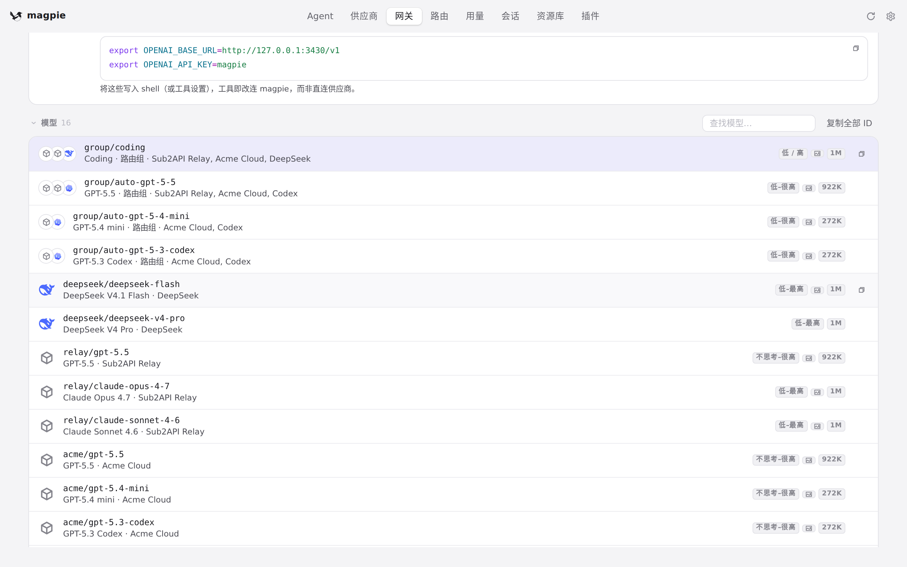
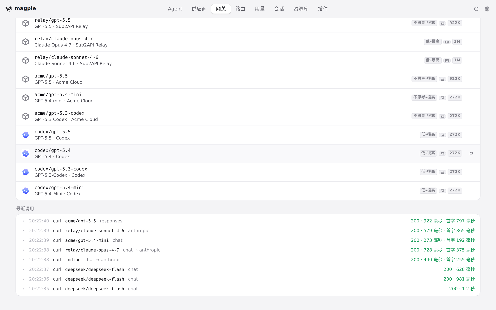
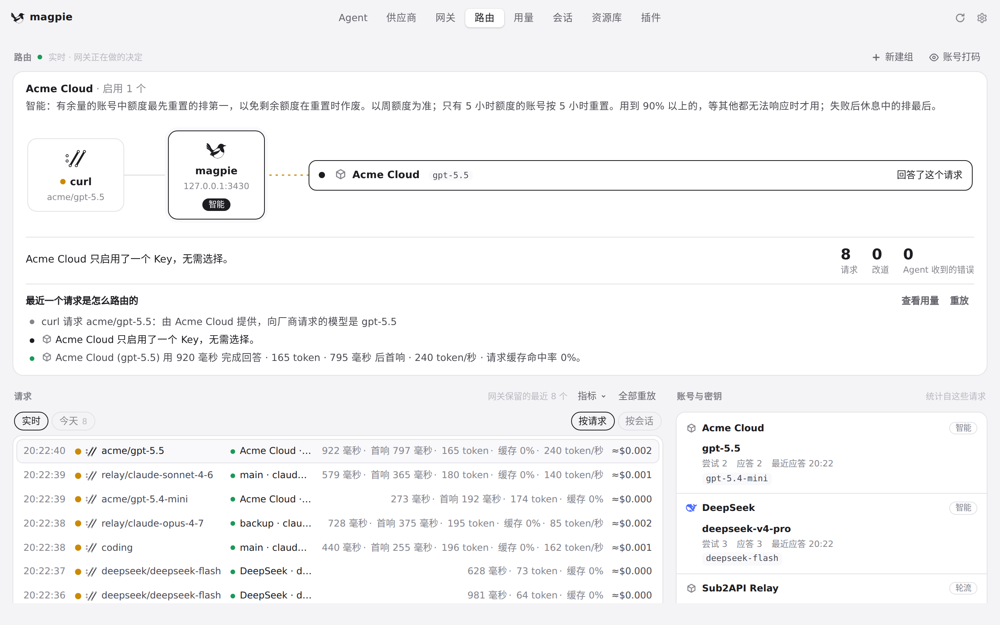
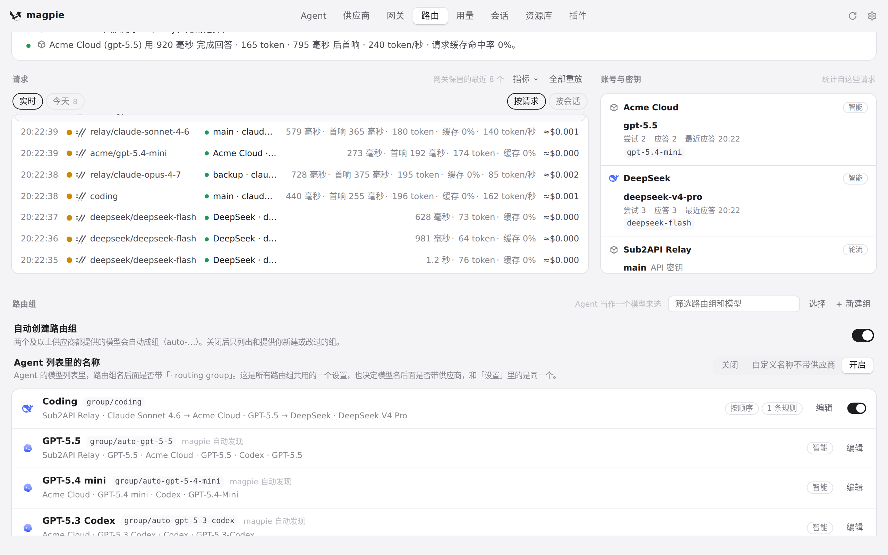

#1213 界面预览
commit b8dfa68 · 回到 PR · app.js 现在把「按在页面滚动条上（pointerdown 落在 .view 的滚动条带内）到松手」这段期间的 scroll 当作读者发起的：拖动不再被 backToReader 逐帧拉回，同时放开点击后的 held 保持与 pinSizes 的锚定回拉；routing.js 的 steady() 通过 window.readerScrolling() 在读者正在滚动时不再把 scrollTop 写回。用户可见的结果是用鼠标拖动页面右侧滚动条（以及先点页面再拖）能让页面停在拖到的位置。
红线是鼠标走过的轨迹，红色圆环是一次点击；底部文字是这一步在做什么。空格暂停，← → 逐段查看。
 网关长列表：页面停在滚动到的位置 · 网关页顶部，模型列表从 group/coding 开始
网关长列表：页面停在滚动到的位置 · 网关页顶部，模型列表从 group/coding 开始

网关长列表：页面停在滚动到的位置 · 向下滚动之后看到的列表位置

网关长列表：页面停在滚动到的位置 · 「最近调用」一节处页面的位置

路由页：实时重绘时的滚动位置 · 路由页顶部：网关正在做的实时决定

路由页：实时重绘时的滚动位置 · 页面实时重绘之后所在的位置